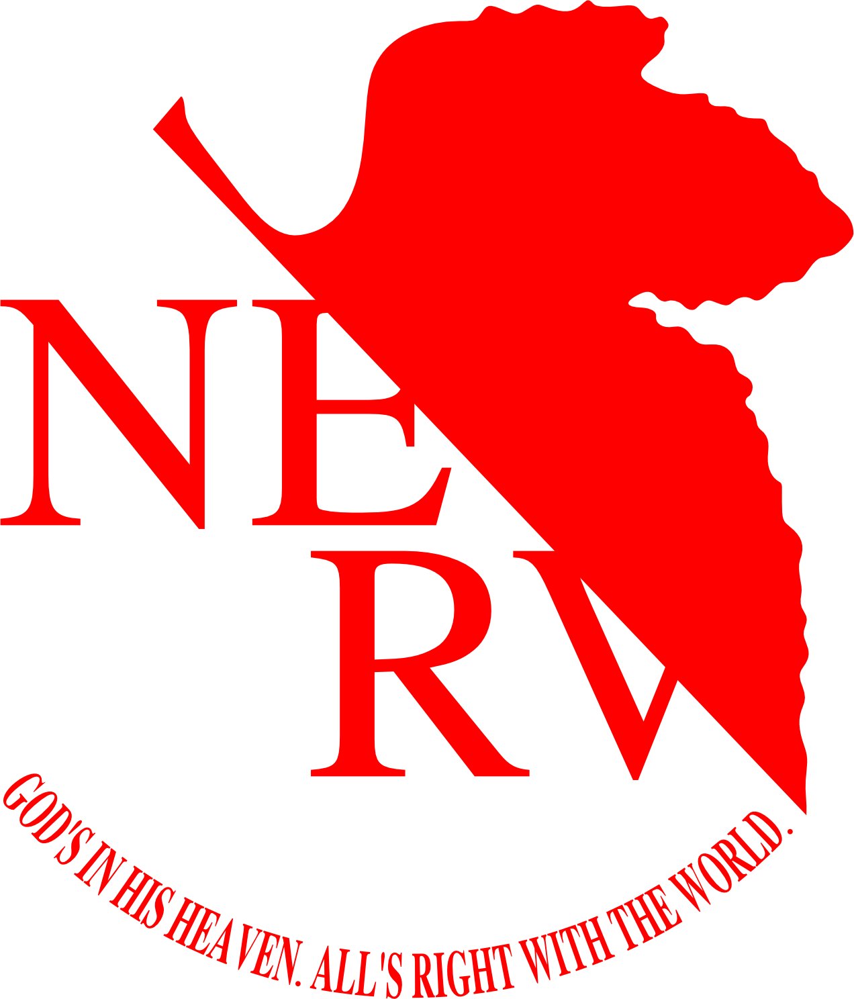

NERV-CODE // chat-dashboard-preview
SYNC
AT-FIELD
Command Session 04
Conversation Core
MiniMax M2.7
Plan Mode On
1 approval pending

Tactical Dialogue Interface
Build, inspect, and operate from one conversation surface.
Inspired by dashboard-style AI workspaces, but tuned for a darker NERV command center look with stronger status hierarchy and more readable chat flow.